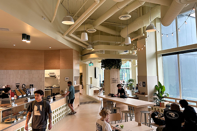
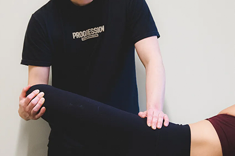
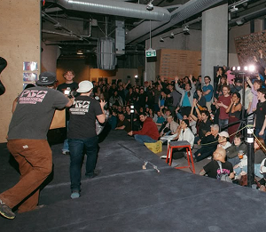
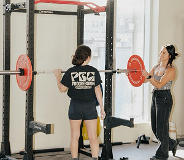
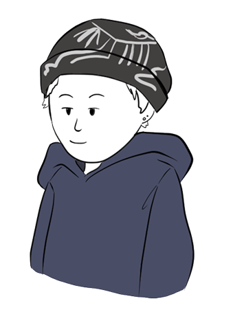
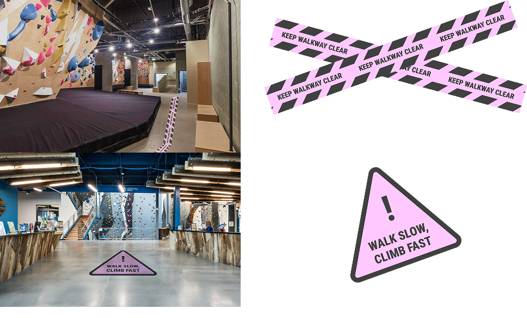
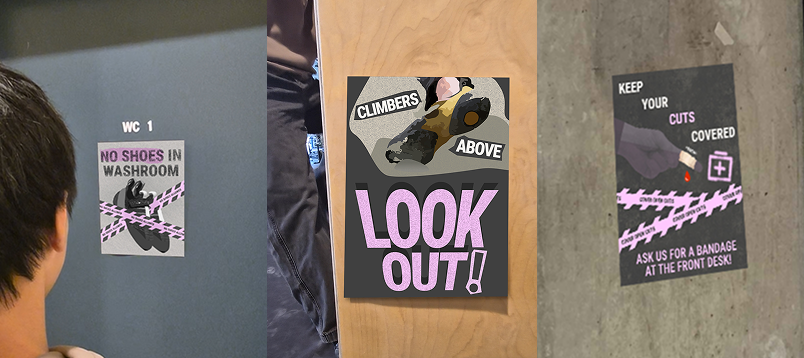
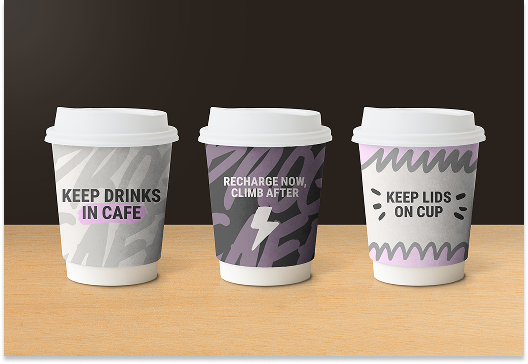

Workshop 1 - Beginner to intermediate climbers
Collaborating with participants from our target climber audience helped us understand what exactly visitors are looking for in guidance
Progression Bouldering Gym Vancouver
A climbing gym that advocates for wellness by creating a community space for climbers of all levels to connect, stay active and build healthy habits.




Insights were discovered through ethnography, google reviews, interviews and surveys.
Jamie hasn't climbed in a while and struggles to remember much from the initial orientation given months ago. They're excited to be back and hope to eventually become a regular but are worried about making mistakes or disrupting others in the gym.

“I’m not really sure what’s allowed or expected of me...seems like I just need to figure it.”
Goal: Become a confident climber in the community.
“I don’t want to accidentally distract somebody or break a rule.”
Goal: Navigate the gym easily while maintaining proper etiquette.
“Am I forgetting to do somethings? Do I need to clean up routes I’ve climbed?”
Goal: Learn about unspoken gym rules.
“I feel like everyone here knows what they’re doing. I don’t want to look out of place.”
Goal: Practice the basics of climbing to work towards becoming a regular.
Following the gym orientation, we noticed a clear lack of instructional reminders and safety signage around the gym. As new climbers, we felt there was still uncertainty around unspoken rules causing hesitation and lower confidence in navigating the space.
Survey data conducted with 7 frequent climbers at Progression.
71%
of climbers believe additional guidance would improve their gym experience.
86%
of climbers see a need for etiquette reminders around the gym.
A need for a visual based system that could integrate seamlessly into the Progression brand while maintaining an approachable and supportive tone. The client was emphasizes on keeping things simple and prioritizing clear visuals over text-heavy instructions to communicate effectively. Any content that would be used should feel like friendly reminders rather than strict enforcement. Given the specificity of climbing gym rules, clarity is essential to ensure users could easily understand expectations. The system also needed to be scalable, allowing the gym to easily adopt it for future signage.
How might we create effective visual systems that promote safety and communicate etiquette expectations to foster a comfortable environment for all climbers?
Working with climbers and our client we conducted 3 workshops to continue to refine potential concepts.
Collaborating with participants from our target climber audience helped us understand what exactly visitors are looking for in guidance
Insights from vary levels of climbers helped ensure our solution can support all visitors in different ways.
Working with an internal team member gave us perspective into company limitations and challenges we need to consider.
A common pain point brought up across all workshops was the reliance on word-of-mouth. As many rules go unspoken climbers recognized a lack of an accessible resource for climbers to fall back on. Experienced climbers suggested key guidance to highlight in signage such as, no shoes in washrooms and keeping cuts covered, while new climbers did not mention these crucial reminders. This made it evident that beginners are likely unaware of these expectations in the gym.
A visual safety and etiquette framework designed to seamlessly align with Progression’s brand identity, ensuring the system is ready for for future adoption.

Addressed Pain Point: Unclear expectations of behaviour and navigation in busy gym environments.
Value for all climbers: Be able to move confidently and safely around the gym so they can focus on climbing.
Value for Progression: Promotes a more organized and efficient space for all climbers to feel comfortable.

Addressed Pain Point: Unaware of gym maintenance responsibilities and operating in a shared space.
Value for all climbers: Adopt considerate gym habits to progress into a regular climber more quickly.
Value for Progression: Contributes to community-driven values and building healthy habits.

Addressed Pain Point: Unknowingly violating gym rules due to unclear or forgotten guidelines.
Value for all climbers: Reassures them that they are following proper protocols to keep themselves and others safe.
Value for Progression: Prevent mistakes that can cause potential safety issues for other climbers while maintaining an easy-going brand.
We learned the importance of staying open minded. When our initial direction didn’t align with the resulting data, we needed to pivot our focus to base it on real user needs.
By grounding our decisions in our research we could rely on real insights to come up with more effective and meaningful solutions.
Working with a client taught us how to adapt to schedules, limitations and feedback cycles. We recognized we needed to have a plan B for certain situations to ensure we stay ahead of the process.
Check out more project files here! Including user journey maps and details on persona creation.